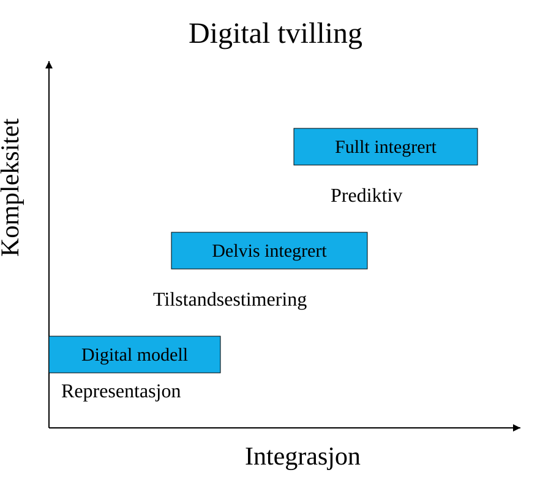

Digitalisering#
Kraftsystemdata#
Eksperter på kraftsystemdata annerkjenner de 3D’ene (Dekarbonisering, Desentralisering og Digitalisering) som pådrivere for systemforandringer i kraftnettet. Disse og andre D’frames er analytiske rammer til å forstå trender som styrer store komplekse forandringer i det framtidige kraftnettet. Kraftsystemdata legger frem de underliggende dataen som beskriver selve forandringen. Et dilemma er strømbehovet til komplekse ki-algoritmer som skal optmalisere strømbruken.
Om ELK330#
Emnet ELK330 er en introduksjon til modellering av transmisjonsliner og 3-fase-systemer. Dette inkluderer last- og kortslutningsberegninger, belastningsfordeling, samt spenningsfall, effekt- og energitap. Emnet inkluderer videre analyse og simulering av dynamisk oppførsel. Emnet gir en oversikt over vern for distribusjonssystemer og i nettet, samt beskyttelse av kabler, generatorer og motorer.
En statisk analyse forteller hvordan nettet ser ut i et gitt øyeblikk.
En dynamisk analyse forteller hvordan nettet utvikler seg
over tid etter en hendelse.
Når vi snakker om analyse og simulering av dynamisk oppførsel i kraftsystemer, mener vi å studere hvordan systemet utvikler seg over tid når det utsettes for endringer eller forstyrrelser.
Typiske dynamiske fenomener vi analyserer i kraftsystemer:
Frekvensrespons etter bortfall av produksjon.
Rotorvinkelstabilitet mellom generatorer.
Spenningsstabilitet.
Oppførsel til regulatorer.
Vernoperasjoner.
Oscillasjoner i nettet.
Respons fra vindkraft, solkraft og batterier.
Oppstart og innkobling av store laster.
Et godt eksempel er bortfall av en generator.
Hva skjer hvis en generator på 500 MW kobles fra nettet?
En statisk analyse er opptatt av effektflyten etter at systemet har stabilisert seg.
Et dynamisk perspektiv spør:
Hvor raskt synker frekvensen?
Hvor lav blir frekvensen?
Rekker regulatorene å reagere?
Forblir generatorene synkrone?
Kobles vernene ut?
Tilstandsestimering#
Digitalisering gir informasjon om hvordan nettet faktisk oppfører seg. Tilstandsestimering gir et oppdatert bilde av driftstilstand. Dynamiske simuleringer gjør det mulig å undersøke hvordan nettet vil utvikle seg etter en forstyrrelse eller endring. Digitale tvillinger kombinerer disse elementene for å støtte prediksjon og beslutningstaking.
Mens digitalisering gir økt situasjonsforståelse gjennom innsamling og behandling av driftsdata, muliggjør dynamiske simuleringer prediksjon av tidsavhengig systemoppførsel. Sammen gir dette grunnlag for analyse av stabilitet, robusthet og fremtidige driftstilstander i moderne kraftsystemer.
Vi går fra å vite hvordan nettet ser ut, til å forstå hvordan nettet beveger seg.
Simulering#
PowerFactory er et verktøy for å modellere, analysere og simulere elektriske kraftsystemer. Det brukes av nettselskaper, kraftprodusenter, konsulenter og forskere for å modellere og analysere hvordan elektriske nett oppfører seg. Power factory hjelper oss å forstå hvordan strømnettet oppfører seg under normal drift og ved feil, uten å måtte eksperimentere på det virkelige nettet.
En PowerFactory-representasjon kan beskrives både gjennom sin integrasjonsgrad og gjennom sin modellmodenhet, karakterisert ved kompleksitet, fidelity (troverdighet) og funksjonalitet. Modellens integrasjons- og kompleksitetsgrad avgjør i hvilken grad den er avgjørende for kraftselskapets beslutningsstøtte.
En vanlig PowerFactory-modell som brukes i studier/undervisning er ofte en digital modell. En PowerFactory-modell koblet til SCADA, PMU-data og driftsstøttesystemer kan utvikles til en delvis eller fullt integrert digital tvilling.
Kompleksitet beskriver hvor mye av systemet som er modellert.
Integritet (fidelity) beskriver hvor realistisk modellen er.
Integrasjon beskriver hvor tett modellen er koblet til virkeligheten.
Kritzinger |
Integrasjon |
Integritet |
Kraftsystemeksempel |
|---|---|---|---|
Digital Model |
Ingen automatisk kobling |
Lav til høy |
Vanlig PowerFactory-studie |
Digital Shadow |
Enveis dataflyt |
Ofte høy |
Modell oppdateres fra SCADA |
Digital Twin |
Toveis dataflyt |
Høy |
Sanntidsmodell med beslutningsstøtte |
For eksempel kan vi tenke oss tre PowerFactory-modeller:
Nivå 1: Digital modell Topologi Lastflyt Statiske data
Nivå 2: Delvis integrert SCADA-data importeres Modellen oppdateres daglig eller kontinuerlig State estimation
Nivå 3: Fullt integrert digital tvilling Sanntidsmålinger Dynamiske modeller Automatisk parameteroppdatering Prediksjon og operativ beslutningsstøtte

Et PowerFactory-nett med 50 noder som brukes til manuelle lastflytberegninger er typisk en digital modell.
Selv om dette ikke nødvendigvis er en digital tvilling, gir den digitale modellen betydelige fordeler. En viktig fordel er skalerbarhet. Mens manuelle analyser av større kraftsystemer raskt blir upraktiske, kan en digital modell håndtere nett med titalls, hundrevis eller tusenvis av noder og gjøre beregninger på sekunder.
Den digitale modellen gir først og fremst skalerbar analysekapasitet,
mens den digitale tvillingen tilfører kontinuerlig kobling
til den fysiske virkeligheten.
Den digitale modellen gjør det mulig å:
analysere store og komplekse nettverk
utføre lastflyt- og kortslutningsberegninger effektivt
teste ulike drifts- og feilsituasjoner uten risiko for det fysiske anlegget
evaluere konsekvensene av nye laster, produksjonsenheter og nettutvidelser
gjennomføre mange analyser på kort tid
En digital tvilling bygger videre på disse egenskapene ved å koble modellen til det fysiske systemet gjennom sanntidsdata. Forskjellen ligger derfor ikke i evnen til å gjennomføre beregninger, men i graden av integrasjon mellom modellen og den virkelige infrastrukturen.
Analyse og simulering av dynamisk oppførsel i kraftsystemer innebærer å modellere og beregne tidsavhengige prosesser i nettet for å studere hvordan systemet responderer på forstyrrelser, driftsendringer og kontrollhandlinger. Målet er å vurdere systemets stabilitet, robusthet og evne til å opprettholde sikker drift over tid.
Aktivitet |
Nivå i figuren |
Begrunnelse |
|---|---|---|
1. Lage nettmodellen i PowerFactory |
Digital modell (Representasjon) |
Du har en digital representasjon av nettet, men modellen er ikke nødvendigvis koblet til virkelige data. |
2. Koble modellen til sanntidsdata fra driftssystemer |
Delvis integrert (Tilstandsestimering) |
Modellen begynner å motta data fra SCADA/DMS/AMS og reflekterer faktisk driftstilstand. |
3. Oppdatere modellen automatisk slik at den speiler den faktiske tilstanden i nettet |
Delvis integrert (Tilstandsestimering) |
Dette er kjernen i en digital tvilling: toveis kobling eller kontinuerlig synkronisering mellom fysisk og digitalt system. |
4. Kjøre analyser og scenarioer på tvillingen før tiltak utføres i virkeligheten |
Fullt integrert (Prediktiv) |
Modellen brukes ikke bare til å beskrive nåsituasjonen, men til å forutsi konsekvenser av framtidige hendelser og tiltak. |
Git#
Jupyter Book is an open-source tool used to build books, websites, and documents from a collection of interactive notebooks and Markdown files hosted, developed, and managed as an open-source project on GitHub. One such notebook is jupyter notebook. Jupyter Notebook is a free, web-based tool that supports python and lets you write and run live code through live cells, add text explanations and include hyperlinks (hyperreference online links) in markdown cells, so that you can work with data all in one page.
GitHub is a cloud-based platform and website used to manage code. It builds on Git as the underlying tool that runs on your local machine to log file history. GitHub allows developers to collaborate on projects, track changes, and maintain a history of all code versions. It is widely used by individual developers, teams, and organizations to develop software.
How to Create a GitHub Account#
Go to github
Click “Sign up”.
Enter:
Email address
Password
Username (must be unique)
Verify your email address when GitHub sends a confirmation email.
Complete any verification steps.
Choose the Free plan.
Finish the setup wizard.
After Creating the Account
Install Git:
Windows: https://git-scm.com/download/win
macOS: brew install git
Ubuntu/Debian: sudo apt update sudo apt install git
Configure Git:
git config –global user.name “Your Name” git config –global user.email “your_email@example.com”
Create a Repository:
Click New Repository on GitHub.
Enter a repository name.
Optionally add a README.
Click Create repository.
Push Code to GitHub:
git init git add . git commit -m “Initial commit” git branch -M main git remote add origin yourusername/repository.git git push -u origin main
Profile URL Format: yourusername
Git Bash#
Git Bash is a command-line terminal application for Windows that provides:
Git command-line tools
A Bash shell similar to Linux and macOS terminals
Common Unix/Linux commands such as:
ls
pwd
cd
mkdir
rm
cp
mv
Why Use Git Bash?
Git Bash allows Windows users to work with Git and Linux-style commands in a familiar development environment.
Examples:
pwd ls cd Documents mkdir MyProject
Git Commands:
git init git status git add . git commit -m “Initial commit” git push
What Is Installed?
When you install Git for Windows, you typically get:
Git Bash
Git command-line tools
Git GUI
Git Bash vs PowerShell
Git Bash:
Includes Linux-style commands
Includes Git by default
Supports Bash scripting
Popular for GitHub workflows
PowerShell:
Better for Windows administration
Uses PowerShell commands and scripting
Can also run Git if installed separately
Typical Workflow
mkdir power-system-analysis cd power-system-analysis
git init git add . git commit -m “Initial commit”
git remote add origin username/power-system-analysis.git git push -u origin main
Who Should Use Git Bash?
Git Bash is useful for:
Python developers
Engineering students
Researchers
GitHub users
Anyone following Linux-based tutorials
It is often the easiest way for Windows users to learn and use Git.
Core Concepts#
Repository (Repo): A project folder tracking file histories
Commit: A permanent snapshot of your saved changes.
Fork: A complete copy of the repository
Fetch changes: Run git fetch fork to download the fork data.
Merge: Combining separate branch histories back together
Essential Git Commands#
git init: Starts a new, empty repository locally
git clone: Downloads a copy of a remote project
git add: Moves your local changes to staging
git commit -m “message”: Saves staged changes with a note
git status: Shows modified, staged, or untracked files
git push: Sends local commits to a cloud server
git pull: Grabs and merges remote changes into local files.
In addition to provide resources as jupyter notebooks, this jupyter book provide assignments in Binder links. The Binder link will lead you to a server that installs a environment for you, and you can run, modify, and try these scripts using your web browser. Currently it is set up with the service from MyBinder.org which uses the cloud computing resources at Amazon Web Services so that everyone can try jupyter notebooks without installing it. Feel free to give it a try!
Jupyter provides an extension that facilitates creating, distributing, and grading assignments within Jupyter Notebooks called nbgrader.
Nbgrader is an open-source tool, but unfortunaltely it does not work with binder launch.
In the future the course will implement nbgrader to solve assignments.
Nbgrader allows instructors to build a single master copy of an assignment (with hidden tests and solutions) and automatically generate stripped-down student versions, while providing automated and manual grading pipelines.
When nbgrader is implemented in the course it be facilitated to solve assignments.
How to solve assignments in nbgrader#
Download the notebook
Open in Jupyter or VS Code
Run all cells
Replace
# YOUR CODE HERESubmit the notebook file